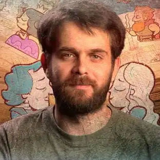

Jonathan Blow
"I want to make games that respect the player's intelligence."
Terry Cavanagh
"I want my games to feel alive like they’re doing something weird and playful, even if you’re standing still."

Daniel Benmergui
"I want to make games that are emotional experiences, not just systems to master."